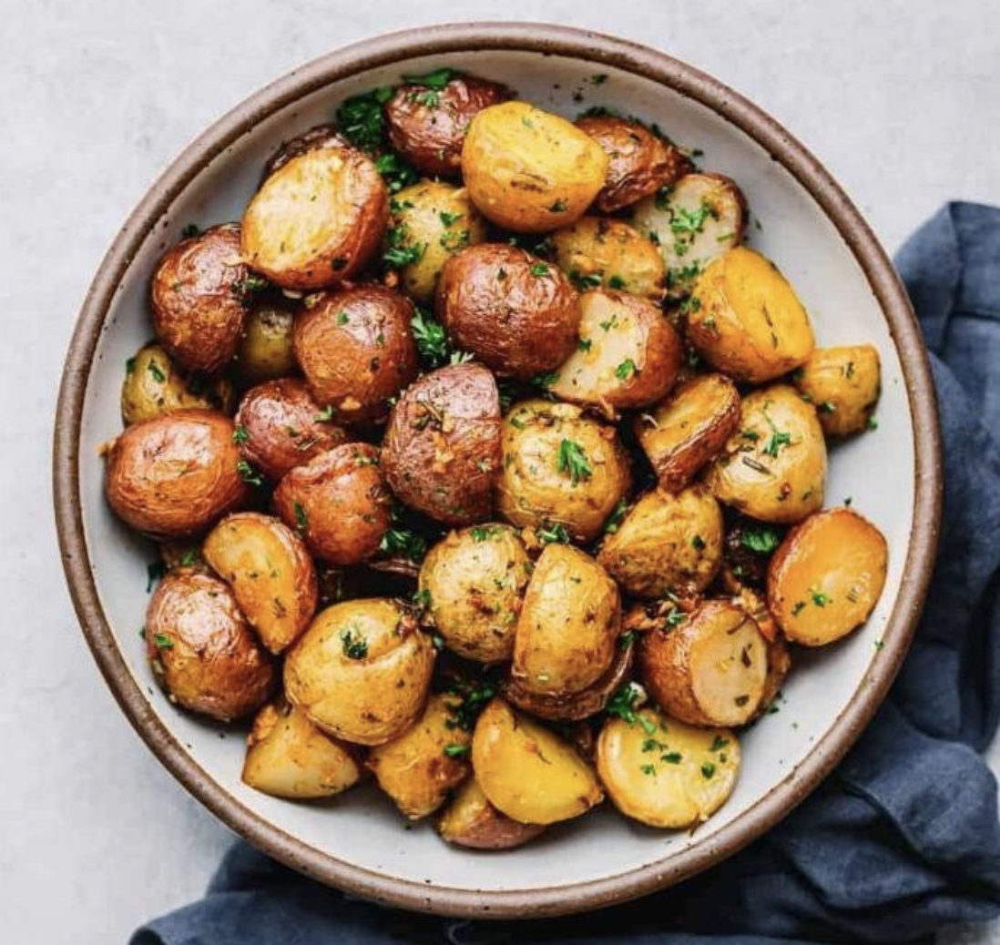

Home
Mini Potatoes

The Dish
When done right these mini potatoes will have a nice crispy outside with a soft interior.
Great when paired with meat or served alone with some BBQ sauce.
Ingredients
- mini potatoes
- 1 dash olive oil
- 1 sprinkle seasoning (YOUR CHOICE)
Directions
- Gather ingredients.
- Fill a medium/large pot about halfway with lightly salted water and bring to a rolling boil. Add potatoes and let them boil for 15 minutes
- Slice potatoes into 4ths. Toss with olive oil and seasoning until evenly coated. Arrange potatoes evenly on a baking sheet
- Preheat oven to 375. Add potatoes and bake for 25 minutes. With 3-5 minutes left, move potatoes to top of oven and broil until exterior is crispy.
- Remove potatoes from oven. Let potatoes cool. Serve with sauce of your choice.